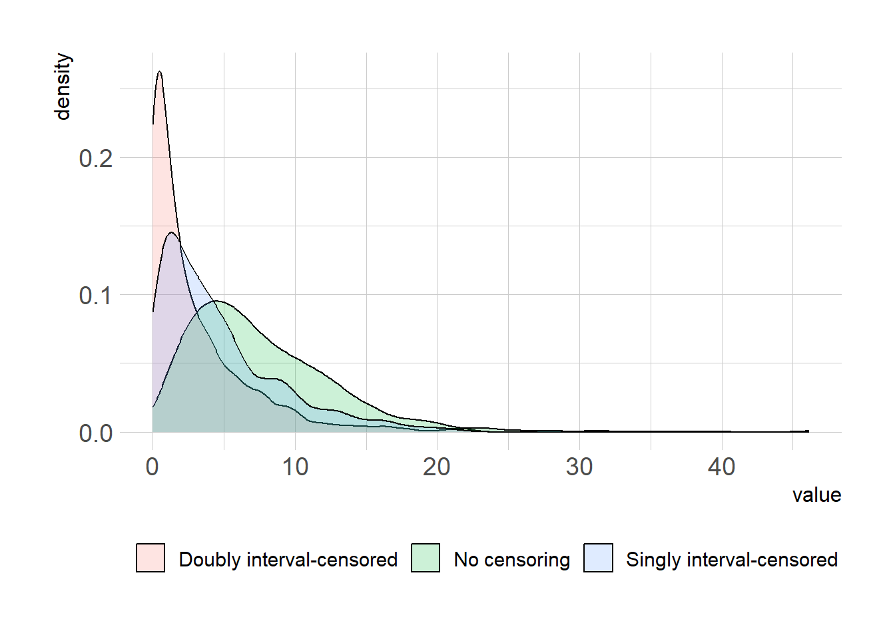

set.seed(42)
n <- 100
shape_true <- 2.2
scale_true <- 3.3
onset_infector <- sample(20:30, size=n, replace=TRUE)
onset_infectee <- onset_infector + rgamma(n, shape=shape_true, scale=scale_true)
nll <- function(parms, x) -sum(dgamma(x, shape=parms[[1]], scale=parms[[2]], log=TRUE))
res1 = optim(par=c(1,2), fn=nll, x=onset_infectee - onset_infector, method = "Nelder-Mead",
control = list(maxit=2e4, reltol=1e-15))
# singly interval-censored data
tau <- sample(1:5, n, replace=TRUE)
AL <- onset_infector
AR <- onset_infector + 2*tau # this will lead to shorter serial interval
nll_single_censor <- function(parms, AL, AR, B){
-sum(log(pgamma(B-AL, shape=parms[[1]], scale=parms[[2]]) - pgamma(B-AR, shape=parms[[1]], scale=parms[[2]])))
}
res2 = optim(par=c(1,2), fn=nll_single_censor, AL=AL, AR=AR,
B=onset_infectee, method="Nelder-Mead",
control = list(maxit=2e4, reltol=1e-15))
# doubly interval-censored data
BL <- onset_infectee - 2*tau # this will lead to even shorter serial interval
BR <- onset_infectee
nll_double_censor <- function(parms, AL, AR, BL, BR){
-sum(log(dunif(AL, min=AL, max=AR)*(pgamma(BR-AL, shape=parms[[1]], scale=parms[[2]]) - pgamma(BL-AR, shape=parms[[1]], scale=parms[[2]]))))
}
res3 = optim(par=c(1,2), fn=nll_double_censor, AL=AL, AR=AR,
BL=BL, BR=BR, method="Nelder-Mead",
control=list(maxit=2e4, reltol=1e-15))
x1 <- rgamma(1e3, shape=res1$par[[1]], scale=res1$par[[2]])
x2 <- rgamma(1e3, shape=res2$par[[1]], scale=res2$par[[2]])
x3 <- rgamma(1e3, shape=res3$par[[1]], scale=res3$par[[2]])
summary(x1) Min. 1st Qu. Median Mean 3rd Qu. Max.
0.1677 3.8165 6.4303 7.5411 10.3268 36.0535 summary(x2) Min. 1st Qu. Median Mean 3rd Qu. Max.
0.03203 1.37089 3.37988 4.70497 6.48863 38.89572 summary(x3) Min. 1st Qu. Median Mean 3rd Qu. Max.
0.00001 0.36330 1.48009 2.92934 4.04038 46.12810 df = data.frame(model=rep(c("No censoring", "Singly interval-censored",
"Doubly interval-censored"), each=1e3),
val=c(x1,x2, x3))
library(ggplot2)
theme_set(hrbrthemes::theme_ipsum_rc(base_size=14, subtitle_size=16, axis_title_size=12))
df |> ggplot(aes(x=val, fill=model))+
geom_density(alpha=0.2) +
labs(x="value", y="density")+
theme(legend.position = "bottom",
legend.title = element_blank())
# ggsave("double_interval_censor.png", gg, units="in", width=3.4*2, height=2.7*2)